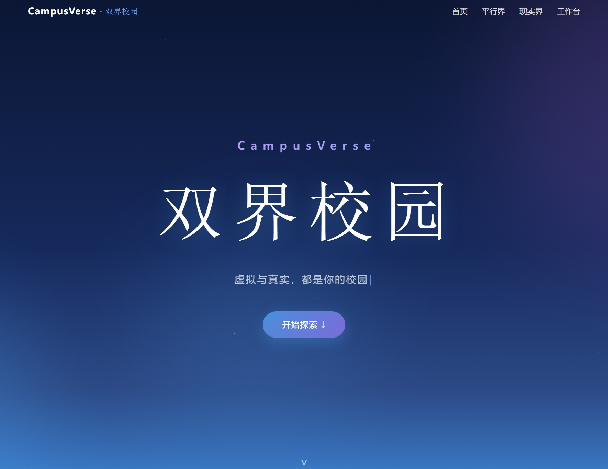
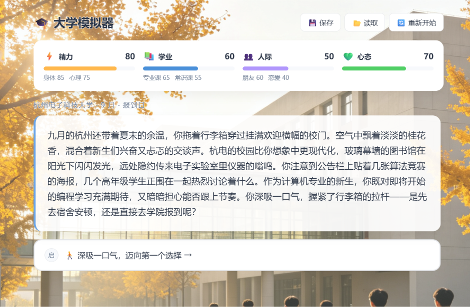
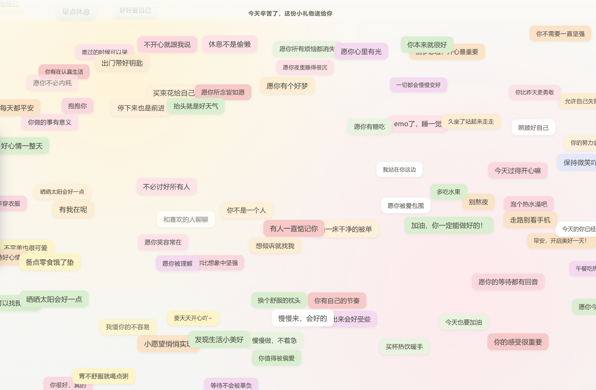
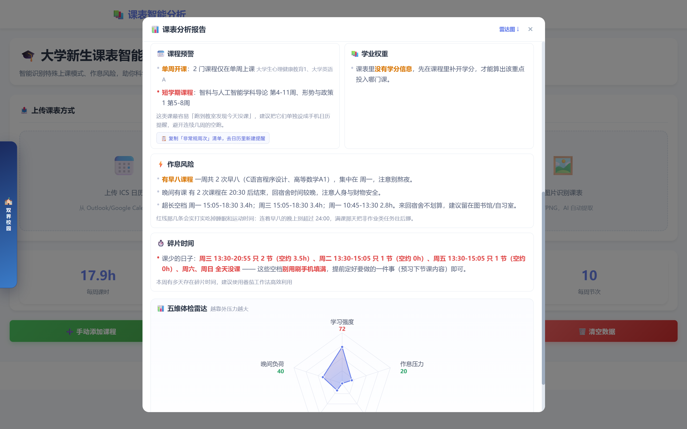

旗舰项目 · 黑客松提名
CampusVerse · 双界校园
未央黑客松《你好，我的大学》赛道 · 5 人团队 · 队长
01
四合一 AI 校园应用平台：用「模拟器预演大学」+「三个实用工具」，帮大学生提前试错、规划校园生活。
02
大学模拟器：四选项剧情，让你在真正进入大学前先「模拟」一遍。
03
情绪地图：校园地图标注情绪、生成情感热力图，低落时自动弹出温暖安慰弹幕。
04
课表排雷：一键识别课表图片、分析排雷。统一 /api/chat AI 代理，44 项冒烟测试全过。